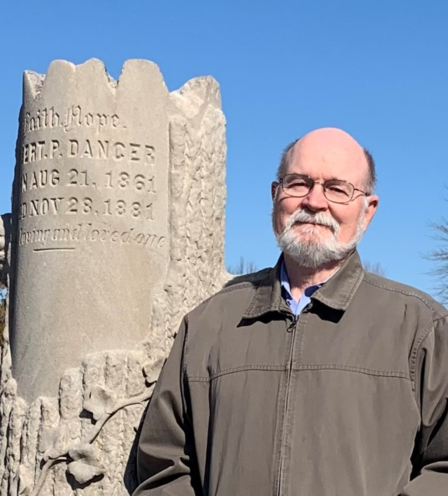

Rose Hill's Origin Story - Recorded Presentation
Description:

Jim Jones, sexton and records manager at Rose Hill Cemetery, shares the story behind a recently uncovered land sale deed that reshapes the cemetery’s origin story—dispelling long-held myths and revising local history. By cross-referencing treasurer, funeral, sexton, and lot sale records, he shows how conflicting information came to light and was resolved. Jones also discusses how errors enter cemetery records and offers simple digital techniques for uncovering and correcting them.WATCH VIDEO (YouTube) COPY OF SLIDES